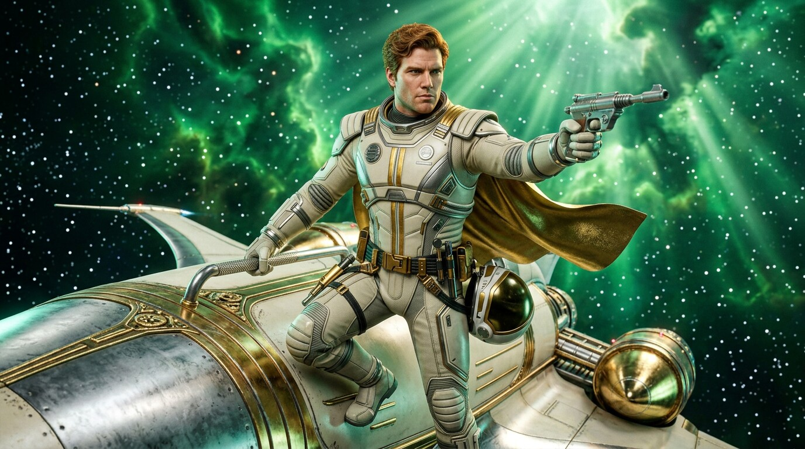
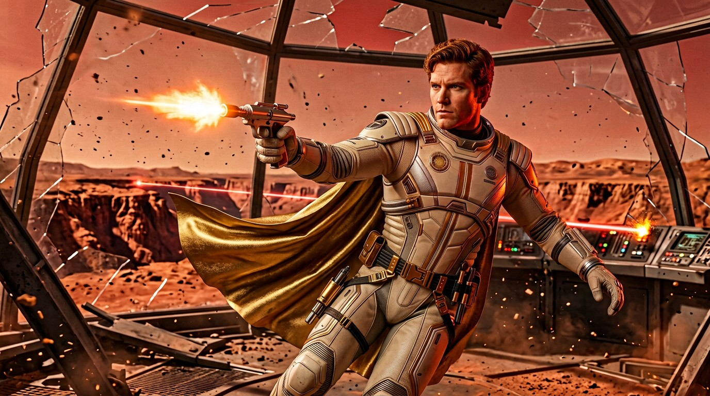
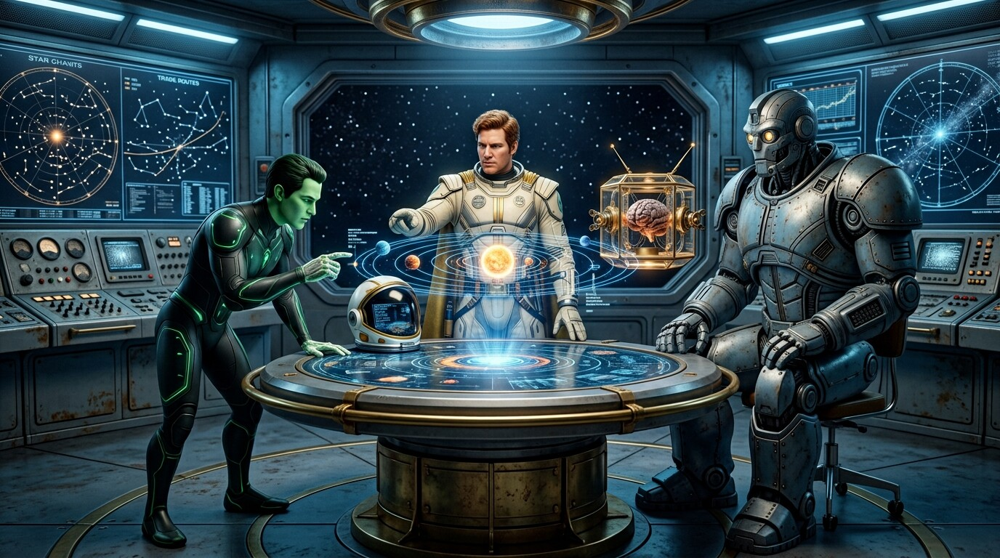

Captain Future
Le Wizard of Science — « Man of Tomorrow »
Biographie
Curtis « Curt » Newton est né sur la Lune, dans la base scientifique de Tycho, fils de Roger et Elaine Newton, deux des plus grands savants du système solaire. Alors qu'il n'était qu'un nourrisson, des criminels attaquèrent la base pour s'emparer des secrets de son père — et assassinèrent ses parents. Seul témoin de la tragédie : Simon Wright, l'ami de Roger, dont l'esprit venait d'être préservé dans un boîtier cristallin, et Grag, le robot construit par Roger Newton.
L'enfant fut élevé en secret par les trois créatures de la base : Simon lui enseigna les sciences, Grag le protégea comme un fils, et Otho — le premier androïde parfait, créé par Simon — fut son frère de jeu et son complice. Curt grandit dans la lumière froide de la Lune, loin des mondes qu'il était destiné à défendre, bercé par les récits d'une Terre et de planètes qu'il n'avait jamais vues.
À vingt-cinq ans, formé à toutes les sciences connues, au combat et au pilotage, il fit le serment de venger ses parents et de protéger le système solaire. Prenant le nom de « Captain Future », il embarqua à bord de The Comet, le vaisseau construit dans les ateliers lunaires, et devint la terreur des criminels de l'espace — le « Wizard of Science » que réclamaient les mondes en péril.
Capacités
En paroles
« The Comet, Futuremen ! »
« Le savant de la science du futur — et de son serment. »
Moments clés
The Space Emperor
Infiltration du vaisseau-monde de l'Empereur, en pleine Ceinture d'Astéroïdes — sa première grande victoire.
Calling Captain Future
Face au docteur Zarro et à la Légion du Péril, il rencontre Joan Randall — et la Police Planétaire cesse de le traquer.
The Comet Kings
Course contre la comète des Rois de l'Espace pour sauver les colonies de Jupiter — son plus grand défi.
En images


Dans les textes originaux
Captain Future Magazine · Hiver 1940 · « The Space Emperor »
« On l'appelait le Wizard of Science. Il vivait sur la Lune, à l'écart des mondes des hommes — mais quand un danger cosmique menaçait le système solaire, une voix retentissait dans tous les postes de la Police Planétaire : "Captain Future, le savant du futur !" »